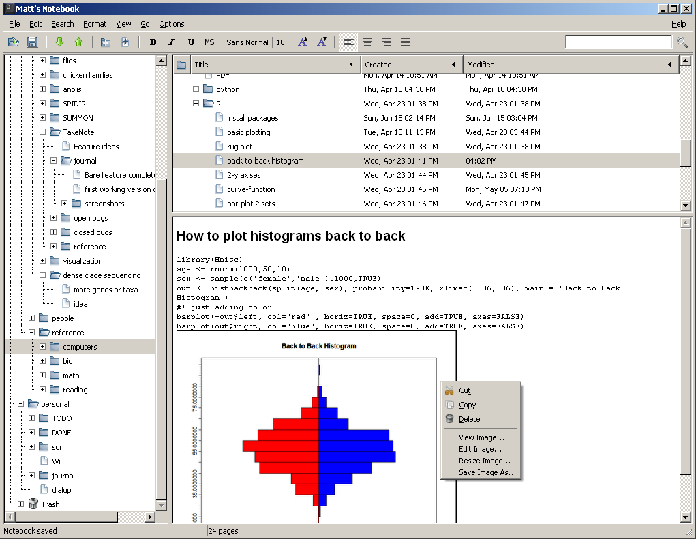
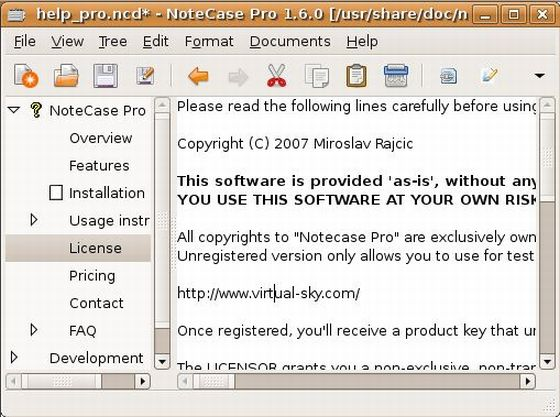

Created 星期六 23 六月 2012
@工具软件
跨平台树状笔记软件的比较
从alternativeTo网站上看到 CherryTree的替代品 中， 跨平台的有这么几个: Tomboy, Zim, WikidPad, NixNote, KeepNote, NoteCase Pro。 Tomboy是便笺类，NixNote是EverNote的客户端
KeepNote
Keepnote也是采用python+gtk开发，可以跨平台，在编辑功能上跟CherryTree差 得倒不多，少了代码高亮功能，多了贴附件和即时截屏功能。 http://keepnote.org/images/screenshot2.png
{kind=link}
keepnote通过插件可以导入Basket 和NoteCase格式的笔记文件，但只能导出为 HTML，且不能部分导出，节点较多时导出很慢很慢。由于keepnote采用目录层级 来存放各级节点，导出时实际是将所有内容拷贝了一份，然后生产了一个 index.html (frameset) 和一个tree.html (TOC)。
keepnote有点小不爽的是，笔记编辑器的右键没有什么功能，插入内容和调整格 式都是通过菜单或者工具条进行，不像CherryTree右键那么方便——虽然这是个小 问题。

NoteCase(Pro)
本来NoteCase也还不错，也可以贴附件，也可以代码高亮（限整个节点，不能像 CherryTree那样将代码框嵌入到文字段落中）。

但2008年在1.9.8之后就不再出开源版本了，而是 商业版本NoteCase Pro。虽然NoteCase Pro在不 注册时也可以用，但富文本支持、代码高亮等功能都没有了(参见: NoteCase Pro Major Features Table)，还不如以前的开源版本——而且，点了某个菜单、选了某个选 项之后蹦出来个对话框说“这个功能只在注册版本才有”，这种感觉我相当不喜 欢。
——不过，原来的开源版也基本够用？有兴趣的可以去sourceforge.net下载下来用用。 http://sourceforge.net/projects/notecase/files/notecase/1.9.8/
我没选NoteCase的另一个小原因是，Debian/Ubuntu/LinuxMint没有收录它，而CherryTree和KeepNote都收录了。
Zim
纯文本保存每个节点（采用wiki语法)，界面上算是一个wiki的WYSWYG编辑器（其实也可以输入wiki语法，Zim会自动在Enter键后转换）
优点:
- 支持对节点添加附件
- 可启动一个Web服务器，将当前笔记本的内容变成一个网站
- 导出为HTML时有Presentation和S5模版，可以用来写演示文档
- 跟WikidPad等wiki类软件不一样的地方时，Zim在格式上是所见即所得的，你不需要记录烦人的wiki语法
- 采用纯文本保存节点内容，手头没有Zim时，可以用其它编辑器打开，浏览/编辑内容都没有太大问题
缺点:
- 插入图片时只是添加了一个链接，没有将图片文件拷贝到笔记本目录内的选项，这使得笔记本不是自包含的
- 不支持表格
- 不支持代码语法高亮
不能粘贴rich-text， 也就是说网页内容直接粘贴过来，里面的链接不能直接识别
Convert Emacs org-mode formatted text to Dokuwiki formatted one #zim
https://gist.github.com/879137
Script to convert NoteCase notes (to zim)
http://zim-wiki.org/wiki/doku.php?id=script_to_convert_notecase_notes&DokuWiki=436d1422e0013cf4c26799a71047220e
Charlie's Second Blog: from org-mode to zim
http://charlie137-2.blogspot.com/2011/02/from-org-mode-to-zim.html
Linux下个人Wiki工具——Zim的使用心得 | Liuyix
http://liuyix.com/linux%E4%B8%8B%E4%B8%AA%E4%BA%BAwiki%E5%B7%A5%E5%85%B7%E2%80%94%E2%80%94zim%E7%9A%84%E4%BD%BF%E7%94%A8%E5%BF%83%E5%BE%97
misc
- [工具软件] 刚发现了flashpad这个工具，这个似乎才是我一直想要的scratch记事本，随手记录些杂七杂八的内容，多条记录简单地通过”---”分隔，能简单地分个类。而cintanotes太严谨了，minipad2每条记录都是独立编辑，调整内容不太方便，BooguNote操作麻烦，点来点去我还不如用org-mode，而atnotes等桌面贴的编辑功能又比较差 [2011-07-07 09:28:26]
- [工具软件] minipad2装了词典文件到dict目录后始终在设置里面不出现，也就没法使用，最后手工修改了minipad2.ini 设置SelDictList=mediumdict.dic,Oxford.dic AllDictList=mediumdict.dic,Oxford.dic 再重启程序就可以用了 [2012-03-07 15:19:51]
- [工具软件] 将stardict字典转为minipad2可用的: 『字典档快速制作实例』 http://www.nebulasoft.cn/bbs/index.php?mods=topicdisplay&forumid=6&postid=40 [2012-03-07 15:52:04]
- 我又抛弃了minipad2（之前因为它抛弃了flashpad），转投CherryTree了，这是个树状笔记软件，支持富文本，支持图片，表格，各种代码的语法高亮，简直就是一个普通人的org-mode啊。采用python+gtk编写，有windows binary包 http://www.ubuntuhome.com/pg-cherrytree.html [2012-06-21 12:11:31]
- CherryTree的导入功能很丰富，可以导入Basket, KeepNote, NoteCase, Leo, Tomboy, TreePad的笔记文件；导出方面，可以将整树导出到一个目录，每个节点一个html文件，每个左边都有TOC，不过节点名含义特殊字符时，该节点无法正确写入html文件） [2012-06-21 13:39:36]
- keepnote也是采用python+gtk开发，可以跨平台，在编辑功能上跟CherryTree差得倒不多，少了代码高亮功能，多了贴附件和即时截屏功能 http://www.keepnote.org// [2012-06-21 13:55:12]
- keepnote通过插件可以导入Basket 和NoteCase，只能导出为HTML，且不能部分导出，节点较多时导出很慢很慢。由于keepnote采用目录层级来存放各级节点，导出时实际是将所有内容拷贝了一份，然后生产了一个index.html (frameset) 和一个tree.html (TOC) [2012-06-21 14:09:45]http://notecasepro.com/images/screenshots/ncpro_1.9.9_osxtiger.jpg
- keepnote有点小不爽的是，笔记编辑器的右键没有什么功能，插入内容和调整格式都是通过菜单或者工具条进行，不像CherryTree右键那么方便——虽然这是个小问题 [2012-06-21 14:11:42]
- [树状笔记软件] TreePad号称跨平台，其实是用wine来跑； 它导出整个树时是写到单个文件中，用来写简单的用户手册之类的相当合适；这个软件本来能力也挺强，但免费的Lite版本只能放纯文本；http://www.treepad.com/featurechart/ [2012-06-21 14:22:17]
- [跨平台树状笔记软件http://notecasepro.com/images/screenshots/ncpro_1.9.9_osxtiger.jpg] 本来NoteCase也还不错，也可以贴附件，也可以代码高亮（限整个节点），但2008年在1.9.8之后就不再出开源版本了，虽然NoteCase Pro也有免费版，但这个免费版把富文本支持、代码高亮给取消了——不过，原来的开源版也基本够用？ http://www.notecasepro.com/Feature-Table.htm [2012-06-21 16:45:52]
{kind=link}
{kind=link}
{kind=link}